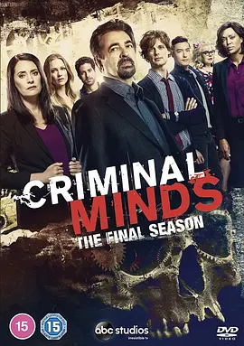

9.2
犯罪心理 第十五季
Criminal Minds Season 15
2020
美国
评分 9.2
导演:
格伦·卡肖 / 爱德华·艾伦·贝内罗
演员:
马修·格雷·古柏勒 / 克斯汀·范奈丝 / 亚当·罗德里格兹 / 乔·曼特纳 / A·J·库克 / 帕姬·布鲁斯特 / 丹尼尔·亨利
类型:
剧情,悬疑,犯罪
剧情简介
第十五季作为全剧的最终章，从一场规模庞大且极具挑衅意味的追捕行动开始。BAU 在连续不断的通宵飞行和现场调度中找回此前各季累积的默契，却也几乎被对手逼到崩溃边缘。这个被他们称为“变色龙”的连环罪犯擅长隐匿身份，他在全国范围内更换伪装、反复制造假线索，让团队的每次接近都像踏进精心编织的陷阱。普莱提斯承担起最后阶段的队长责任，她的直觉和果断使团队在动荡时刻保持一致方向；霍奇的缺席与过往的阴影，也让她更清楚“领导”真正需要承担的重量。罗西则在本季面对自己职业生涯最大的执念，他长期追踪的宿敌再次浮出水面，使他不得不直面那些压在心底多年的愤怒与愧疚。他的判断因此更锋利，也更危险，而团队成员对他的信任成为最强的安全绳。瑞德的成长在最终季显得格外动人。他依旧是那个能在数秒内看穿嫌犯心理结构的高智商侧写师，但在与受害者互动、与队友交流时，也展现出比早年更柔和、更成熟的一面。JJ 在本季承担关键任务，她在沟通、分析与战术推进中的表现，让她成为团队不可或缺的支柱之一。Alvez 与 Simmons 的协作则让行动线更具速度感，他们在追捕现场展现出的精准配合，多次在瞬息之间扭转局势。另一方面，加西亚直面着一项艰难的抉择——继续留在 BAU，还是走向一个不会日日直面黑暗的新生活。她在电脑前的每一次停顿，都像是在提醒观众：长期与痛苦和暴力并肩，会在心里留下怎样的痕迹。她依旧用幽默和活力为团队带来亮光，而每一声温暖的提醒，都在削弱案件带来的阴霾。最终季的案件节奏紧凑，情绪浓度极高，每一次追捕都更加直接、更加贴近成员的内心世界。当 “变色龙” 的真面目终于清晰，BAU 也不得不做出过去十五年从未面对过的终极抉择——是继续被仇恨牵引，还是让正义在最恰当的方式中落幕。第十五季不仅是对一个时代的告别，更是对每位成员成长与伤痕的温柔收束。他们在无数黑夜里相互扶持，也在最后一刻依旧选择相信彼此。